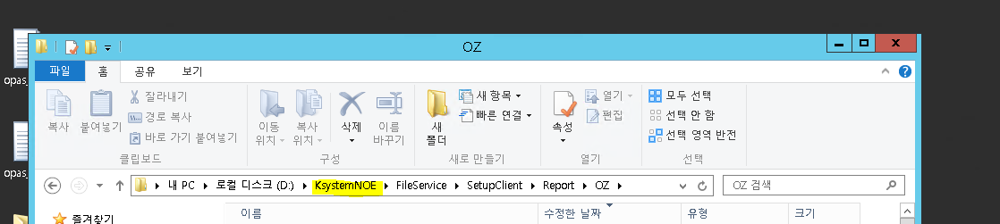

1번 출력물 위치
\61.250.183.1\d\KsystemAce\ACE_Kstudio_APP\FileService\SetupClient\Report\OZ
C:\ksystem\oz70\repository_files
Administrator
sysdelv1!@
Genuine
D:\Ksystem\FileService\SetupClient\Report\OZ
D:\Ksystem\FileService\SetupClient\Report\RD
밑에 처럼 한 서버에 여러 사이트인 경우 Ksystem => Ksystem사이트명 일 수도 있다

D:\KsystemDev\FileService\SetupClient\Report\OZ x
Ace
C:\ksystem\oz70\repository_files
D:\KsystemDEV_wk_CS\FileService\SetupClient\Report\OZ